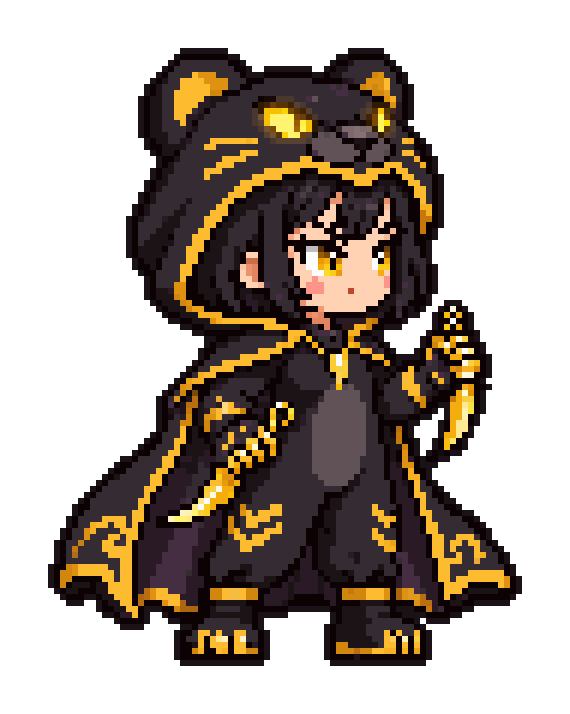
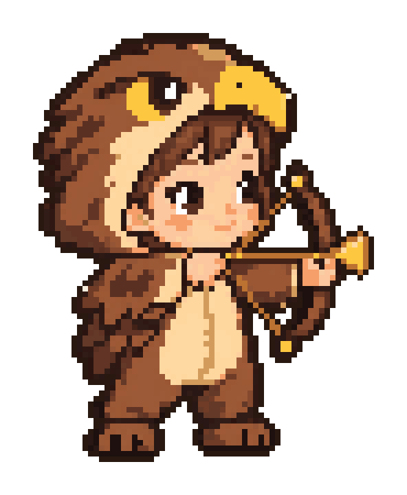

คำสั่งเจนภาพเด็ก 🧸
Babies & Beasts · เด็ก 6 คน คนละคลาส · คนเดิมโตขึ้นทุกระดับ (ขาว 2 · เขียว 4 · ม่วง 6 · แดง 7 · ทอง 8 ขวบ)
วิธีใช้
- กดค้างที่รูปตัวอย่างด้านล่าง → บันทึกรูป
- เลือกเด็ก → เริ่มจากร่างทองก่อน (ล็อกหน้าตา) เปิดแชต ChatGPT ใหม่ แนบรูปตัวอย่างสไตล์ กด คัดลอก แล้ววาง ส่ง
- ระดับอื่นพิมพ์ต่อในแชตเดิม (หรือแนบรูปร่างทองที่ได้) คัดลอกทีละอัน รอรูปเสร็จค่อยส่งอันถัดไป
- ได้รูปแล้วส่งมาให้ Claude ในแชต (ส่งเป็น zip ทีละหลายรูปก็ได้) จะแปลงเป็นพิกเซลจริงแล้วใส่เกมให้
รูปตัวอย่างสไตล์

ใช้กับร่างทองของทุกคน (ระดับรายละเอียดทอง)

สไตล์พิกเซลเด็กเล็ก (ใช้ได้ทุกระดับ)
ข้อควรระวัง (เรียนรู้จากรูปนิล)
- ถืออาวุธ: ด้ามอยู่ในกำมือ ใบมีด/หัวอาวุธออกจากกำปั้น ไม่โผล่จากแขนเสื้อ (คำสั่งเขียนไว้แล้ว)
- สีผม/สีตาให้เหมือนเดิมทุกระดับ (นิลขาว/เขียว GPT เปลี่ยนผมเป็นน้ำตาลเอง) ถ้าเพี้ยนพิมพ์ต่อ:
Keep the same hair colour as the gold picture.
- ตาต้องเห็นชัดทั้งสองข้าง ผมไม่ปิดตา
- พื้นหลังขาวล้วน ไม่มีประกายดาว ไม่มีตัวหนังสือ หันขวา เห็นทั้งตัว
- ถ้าหน้าไม่เหมือนร่างทอง พิมพ์ต่อ:
Make the face look more like the gold picture.
หน้านี้อยู่ใน repo ที่ docs/bb-prompts.html · แก้คำสั่งได้ที่ตาราง KIDS ในไฟล์